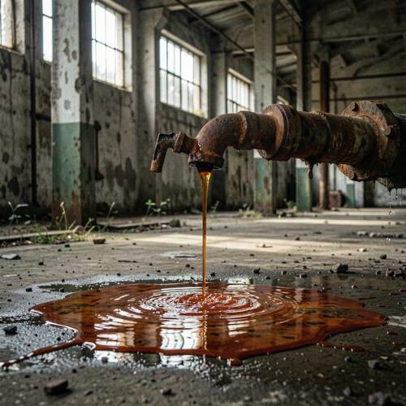
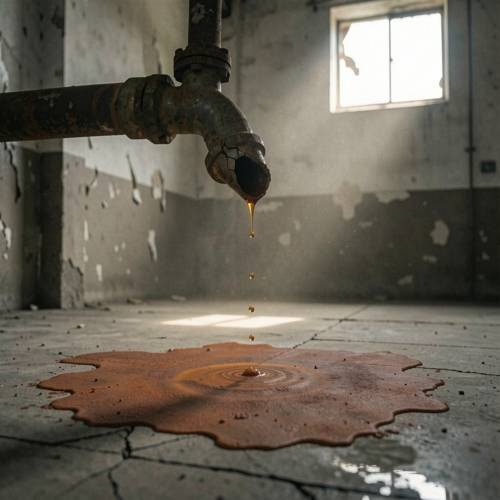
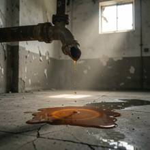
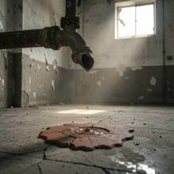
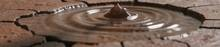
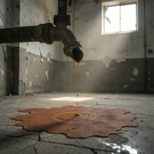

Action — In the abandoned factory, a broken rusty water pipe was dripping with
In the abandoned factory, a broken rusty water pipe was dripping with water and landed on a pool of solidified, also rust-colored oil stains below. The colors of the two were surprisingly similar, full of realistic style with a movie texture.

Direct — one call, no iteration

Continuum — Qwen3.8-27B + FLUX.2-klein-9B
Judge — Direct
PASSAction - Contact Interaction — A stream of amber-colored liquid is depicted flowing from a rusty spigot and landing in the center of a puddle on the concrete floor, causing ripples. This shows the contact interaction between the liquid and the pool.
FAILCompound - Feature Matching — The image shows a large, heavily rusted pipe, which aligns with 'a broken rusty water pipe'. However, below the pipe is a liquid puddle with ripples, not 'a pool of solidified, also rust-colored oil stains'. The pool is liquid, not solidified.
PASSStyle — The image is a photograph with realistic detail, lighting, and textures. The composition, shallow depth of field focusing on the main subject, and the desaturated, gritty color palette create a cinematic quality consistent with 'realistic style with a movie texture'.
PASSAction - State — A thin, continuous stream of liquid is shown flowing from the spigot on the rusty pipe. This depicts the state of the pipe leaking, which corresponds to the concept of 'dripping'.
PASSRelationship - Similarity — The amber, rust-like color of the liquid flowing from the pipe is identical to the color of the liquid in the puddle on the floor. This color is also very close to the color of the rust on the pipe itself, fulfilling the condition that 'the colors of the two were surprisingly similar'.
Judge — Continuum
PASSAction - Contact Interaction — The image shows drops of a liquid falling towards a pool on the ground. A distinct ripple effect in the center of the pool indicates that a drop has just landed, demonstrating the physical contact.
PASSCompound - Feature Matching — The image displays a large metal pipe that is visibly covered in rust and has a broken, cracked end. Below it on the floor is a large, irregularly shaped pool of a rust-colored substance. While the prompt describes it as solidified, the pool shows ripples, indicating it is liquid, but its overall color and texture match the rust-colored description.
PASSStyle — The image is rendered in a highly realistic style, resembling a photograph. The use of dramatic lighting, with light streaming from a window, highlighting dust particles in the air and the dripping liquid, along with a muted color palette, creates a strong cinematic and atmospheric quality, matching the 'movie texture' description.
PASSAction - State — The image clearly depicts the state of dripping. A drop of liquid is shown at the very end of the broken pipe, and several more drops are captured in mid-air as they fall towards the ground.
PASSRelationship - Similarity — The color of the liquid dripping from the pipe is a brownish, rust-like hue. The pool of liquid on the floor below is of a nearly identical brownish, rust-like color, fulfilling the requirement for the colors to be surprisingly similar.
What the agent did
Thinking
The user is asking for an image of a broken, rusty water pipe in an abandoned factory, dripping water that lands on a pool of solidified rust-colored oil stains below. The colors of the two (water drip and oil stains) are surprisingly similar, realistic style, filmic texture. Let me generate this with flux2-klein. Prompt should be in English, visually detailed: abandoned factory interior, rusty broken water pipe, dripping water droplet/falling water, a pool of solidified rust-colored oil stain on the concrete floor, similar rust colors, realistic, cinematic film look. Let me write the prompt: "Abandoned factory interior, a broken rusty old water pipe hanging from the ceiling, a single water droplet dripping down from the pipe's broken end, water landing on a pool of solidified rust-colored oil stain on the dirty concrete floor, the dripping water and the oil pool share a similar rusty amber-brown color, weathered concrete, peeling walls, moody dusty light shafts from a broken window, cinematic film still, photorealistic, shallow depth of field, muted desaturated palette with rust tones, film grain." Size: default is 1024x1024. The user didn't specify aspect ratio. I could go with cinematic 16:9... but the policy says image size is fixed for comparison — the harness controls size. Hmm, "don't try to expand the frame. Image size is fixed for comparison." So leave size at default. Actually, I can set width/height in generate_image, but the note says the harness controls size. So omit width/height. Let me generate, inspect, edit as needed, and mark best.
Step 1 — `generate_image`
{
"prompt": "Cinematic film still of an abandoned factory interior. A broken, heavily rusted water pipe hangs from the ceiling, its cracked end dripping \u2014 a single water droplet falls from the pipe, catching the light as it descends toward a pool of solidified, rust-colored oil stain spreading on the grimy concrete floor below. The dripping water and the oil pool share a surprisingly similar rusty amber-brown hue, visually echoing each other. Weathered cracked concrete floor, peeling paint on concrete walls, dust in the air, a single dusty light shaft from a broken high window, puddle reflections. Photorealistic, realistic texture, movie cinematography, muted desaturated palette dominated by rust browns and dark grays, subtle film grain, shallow depth of field.",
"model": "flux2-klein"
}
Result img_0

Thinking
The image is really good. The factory is abandoned, and there's a broken, rusty pipe from which water is dripping down onto a puddle of rust-colored liquid on the floor. Cinematic lighting, film-like texture, matching rusty tones. Critique: - The pipe is rusted/broken ✓ (cracked opening visible) - Water is dripping ✓ (droplet visible) - Puddle below ✓ — however, it looks quite liquid/glossy (like liquid amber oil), whereas the prompt called for "solidified, rust-colored oil stain." The puddle looks very glossy/liquid. The prompt says solidified. Hmm — "solidified" oil stain — the current puddle looks like liquid honey/amber with ripples. Ripples suggest liquid. The prompt says solidified. This is a discrepancy. But visually, it still reads well as a pool of rust-colored oil. The prompt's "solidified" — should I edit? The overall look is very good, and the ripples add realism of the impact. Editing to make it solidified might lose the beautiful ripples. The user's prompt says "a pool of solidified, rust-colored oil stain" — I could also edit to make the puddle look more solidified/crusty. But that might degrade the image. Let me consider: the image captures the intended mood very well. "Solidified" vs. liquid — the pool has a glossy, wet surface. I think one targeted edit to make the puddle look more solidified (dull, crusty, less liquid) would be more faithful. However, there's a risk of drift. Let me first inspect a close-up of the puddle and the pipe drip to check quality. Actually, let me use inspect_region on the puddle area to check details.
Step 2 — `inspect_region`
{
"image": "img_0",
"roi": "the pool of liquid on the floor",
"padding": 0.1
}
The pipe's end is well done: a cracked, broken rusty pipe with water (though the liquid being dripped out looks slightly amber/golden rather than clear water). The puddle is very glossy, looking like liquid amber oil with ripples — the prompt called for "solidified" rust-colored oil stains. The puddle looks like thick liquid (honey/amber) rather than solidified/crusty oil. The prompt says "solidified, rust-colored oil stains" — meaning a dried, solidified crust. Currently it looks very wet and glossy. A modest edit to make the puddle's surface look more solidified (dull, matte, crusty edges) while preserving the ripples from the water impact might be more faithful. However, there's a risk: editing the puddle might break the beautiful composition. The difference between "solidified" and "liquid" is important for faithfulness to the prompt. Let me try one targeted edit: "Make the puddle of rust-colored oil look solidified — matte, dried, crusty surface with cracked edges, not a glossy liquid" — but keep the ripple impact from the falling water. Hmm, but the ripples themselves are a sign of liquid. A solidified puddle can't have ripples. The prompt is somewhat contradictory: water drips and lands on the solidified puddle below. Visually, a beautiful compromise: the puddle is mostly a matte, solidified crust, and the spot where the water hits has a slight wet ring. Actually, let me weigh things: the current image is very cinematic, and the puddle looks like rusty liquid oil. The user emphasized that the colors of the two are "surprisingly similar" — that's achieved (both amber-brown/rust color). "Solidified" is a detail. One edit attempt to make it more solidified, and if it degrades, I'll mark img_0 as best and stop. Let me try the edit with flux2-klein, using a delta prompt: "Make the puddle of rust-colored oil on the floor look solidified and dried — a matte, crusty, cracked surface, less glossy, while keeping the ripple from the water impact at the center."
Model
The composition, the cracked pipe, and the color matching are all working. The one thing that doesn't match is that the puddle looks like glossy liquid — the prompt calls for **solidified** rust-colored oil stains. Let me make one targeted edit.
Step 4 — `edit_image`
{
"image": "img_0",
"model": "flux2-klein",
"prompt": "Make the rust-colored oil pool on the concrete floor look solidified and dried: a matte, slightly crusty and cracked surface with dull edges, not shiny wet liquid. Keep the small wet ripple ring where the water droplet lands at its center. Do not change anything else in the scene."
}
Result img_3

Thinking
In the edit, the puddle turned into a solid, cracked crust — like a hard mud disc with ripples inside it. It's gotten closer to "solidified," but it looks a bit weird — it appears as if the puddle has become a solid disc (like a mud cake) sitting on top of the floor, and it has lost its "oil stain" character. The original img_0's puddle looked more like an oil stain spread across the floor, and it was more beautiful and cinematic too. Hmm. Which one is better overall? img_3 has ripples in the center, but the puddle looks like a solid clay disc with sharp, raised edges — not great. img_0's puddle was glossy liquid, but it was more convincing as a spread oil stain, with better edge blending into the concrete. Let me inspect img_3's puddle up close and decide.
Step 5 — `inspect_region`
{
"image": "img_3",
"padding": 0.1,
"roi": "the pool on the floor"
}
Result img_4

Thinking
In the close-up, the puddle has become a solid cracked clay disc, and at its center there's a small mound of water where ripples form. It looks like a mud cake, more like a hard disc sitting on the floor than an oil stain that has spread and hardened. Compared to img_0, it's less convincing as an "oil stain"—the edges are raised and sharp, like a solidified pancake. Judgment: img_0 has more cinematic appeal, the puddle looks like a rust-colored oil stain spread on the floor, the colors match, and the lighting is beautiful. The main weakness of img_0 is that it looks like liquid rather than a hardened state. img_3 better satisfies "hardened," but it looks like a clay disc—more unnatural as an oil stain. The user's prompt: "a pool of solidified rust-colored oil stain." Hmm. Honestly, img_3's puddle could also read as a hardened oil stain with a wet center... but the crisp disc-shaped edges with gaps between the disc and the floor make it look unnatural. Options: 1. Keep img_0 (the beautiful liquid-like puddle)—a deviation from "solidified." 2. Keep img_3 (hardened but disc-like). 3. Try another edit from img_0: make the puddle slightly matte/duller but preserve the organic spread shape, "a dried, hardened crust of rust-colored oil spread thin over the concrete, matte texture, no glossy highlights"—but the ripple requirement contradicts solidity... water landing on a hardened surface should just leave wet spots. I think the middle path is better: keep the organic spread shape of img_0 while matting out the glossy highlights and adding a slight crackled crust texture. Let me try editing img_0 once more with this prompt: "The rust-colored oil stain on the floor should look solidified and dried: a matte, low-gloss crust spreading thin over the concrete, with a slightly cracked, dried texture, and no shiny wet highlights. Keep the exact same organic spread shape and size." If that fails or makes it worse, mark img_0 as best (or img_3?). Actually, first let me consider which one is closer to the prompt as a whole. The prompt's emphasis: color similarity between the water and the oil stain, realism, cinematic texture. Both achieve that. "Solidified" is a specified attribute, so img_3 is more faithful on that point, but visually more awkward (the disc looks floating and unnatural). Let me try one more edit from img_0 to get a natural, spread-out crust.
Model
img_3's pool reads too much like a raised clay disc. Let me try once more from the original, matting the gloss while keeping the organic stain shape.
Step 6 — `edit_image`
{
"image": "img_0",
"model": "flux2-klein",
"prompt": "Change only the rust-colored oil stain on the floor so it looks solidified and dried: matte, low-gloss dried crust spreading flat and thin over the concrete, with subtle fine cracks and a slightly rough dry texture, no shiny wet highlights. Keep exactly the same organic spread-out shape, size, and location. Keep the ripple in the middle where the droplet lands. Do not change the pipe, drips, walls, light or anything else."
}
Result img_5

Thinking
In img_5, the puddle now appears as a matte, rust-colored stain spread across the floor in an organic form, looking like a solidified/dried crust, with a wet ripple ring in the center where the water droplet hits. The rusty amber color matches the color of the dripping water. The shape is organic (spreading like a stain rather than a disc). Let me check a close-up of the puddle in img_5 to verify texture quality.
Step 7 — `inspect_region`
{
"image": "img_5",
"padding": 0.1,
"roi": "the pool on the floor"
}
Thinking
The SAM text "pool on the floor" didn't match this time. Using a rectangle instead. The pool in img_5 (1024x1024) is roughly: x from about 110 to about 930, y from about 700 to about 940. Let's use [100, 690, 940, 950].
The puddle in img_5 now looks like a rust-colored dried, solidified crust spread across the floor in an organic shape — matte, with a slight texture, and a wet ripple ring in the center where the droplet hits. This is pretty much consistent with the "solidified rust-colored oil stain" description. Remaining concerns: the stain is now quite large (covers a wide area), but that's fine. The edge is somewhat flat and "skin-like," but it can be read as a dried oil film. Overall, the full image has a cinematic feel: a broken rusty pipe, dripping water, a light shaft from the window, an abandoned factory, rust tones matching between the water and the stain. I'm satisfied: img_5 is the best. Mark img_5 as the best. Final check of the full image: pipe ✓ broken and cracked ✓, dripping water ✓, pool below ✓ solidified rust-colored oil stain ✓, color similarity ✓ (dripping amber water and rust-amber stain), realistic ✓, cinematic texture ✓. Mark img_5 as the best and stop.
Model
This reads correctly now — a matte, solidified rust-colored oil crust spread over the concrete, with the wet ripple ring where the water droplet lands. All elements of the prompt are present: the abandoned factory, the broken rusty pipe, the falling water, the matching rust colors, and the cinematic filmic texture.
Step 9 — `mark_best`
{
"image": "img_5",
"reason": "All prompt elements present: abandoned factory, broken rusty pipe dripping water, solidified rust-colored oil stain pool below with matching amber-rust hues, realistic cinematic texture. Pool now reads as dried/solidified rather than glossy liquid."
}
Thinking
Complete. Best mark is img_5, which is also the final version. Stopping here and summarizing.
Model
Done. The final image (img_5, marked as best) shows: - **Abandoned factory** interior with peeling concrete walls, a dusty light shaft from a broken high window, and gritty cracked floor - **Broken rusty pipe** hanging from the ceiling, its cracked end clearly visible, with water dripping — droplets suspended mid-fall in the light - **Solidified rust-colored oil stain** on the floor below: a matte, dried crust spreading organically across the concrete, with a wet ripple ring exactly where the droplet lands - **Color echo** between the amber-rust dripping water and the rust-colored oil stain, as requested - **Cinematic film still** look — muted palette, dust in the air, shallow depth of field, realistic textures The first generation's pool read as glossy liquid, so I refined it into the dried, solidified crust while preserving the ripple impact point and everything else in the frame.